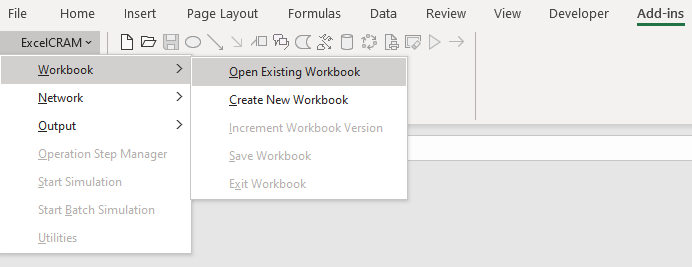
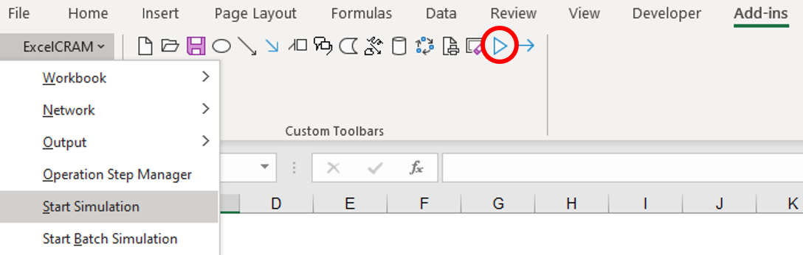
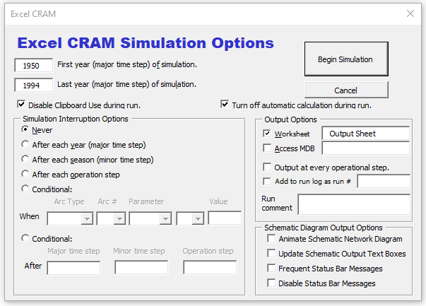
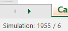
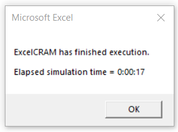
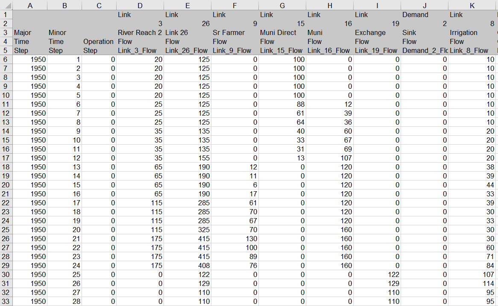

Running a Model¶
Loading a Model¶
CRAM consists of two parts: Lynker’s CRAM model engine (.XLAM) and the user-developed model network diagram, data, and scenarios (.xcwm).
CRAM Model Engine¶
Before the model can be run, Lynker’s CRAM model engine needs to be opened and the model file loaded. The CRAM model engine is opened by starting Microsoft Excel and loading the file XLCRAM2007.XLAM, or by simply double clicking the XLCRAM2007.XLAM file. The model engine can be found in the installation directory (the default directory is C:/Program Files/Lynker).
A pop-up dialog box may appear when this CRAM engine is loaded into Excel, warning that the workbook contains macros and that some macros may contain viruses that could be harmful to the computer. Click on the “Enable Macros” button to allow the CRAM engine to install the menu interface to the Excel ribbon.
Note
Note on Excel Macro Settings: To check your Macro settings in Excel 365, do the following. Click the “File” menu, then click “Options” in the lower left corner. From the Excel Options popup box, first click “Trust Center” in the lower left, then click the “Trust Center Settings” button. A new Trust Center popup box will appear. Navigate to the “Macro Settings” on the left panel, and click “Disable all macros with notification”.
CRAM Model File¶
If the user has not already developed a CRAM model, a network can be built using the tools and menus in Excel CRAM (see Creating a Network). If a model has already been developed, the model network can be loaded and the data and scenarios can be found in the *.xcwm file. Load the model file by finding the Add-in section in the Excel ribbon, then click on Excel CRAM->Workbook->Open Existing Workbook and select the appropriate .xcwm file. If the user does not see this file listed in the dialog box displayed, the user will need to change the current directory by navigating to the folder containing the model (*.xcwm).
Starting a Model Run¶
To run a CRAM model click the Excel CRAM menu, and then the “Start Simulation” option. Alternatively, click the triangle icon pointing to the right.
This will open the Run Simulation dialog box that controls the model run. The first two edit fields identify the starting and ending years of the model run. These fields should have numbers that fall within the range of values in the Year (Major Time Step) column of your time series data sheets.
Note
If the start year is before the first year of time series data, the model will produce the Debugging Tool indicating that an error has occurred. Similarly, if the end year is after the last year of time series data, the model will indicate an error has occurred.
{kind=link}
When CRAM begins a simulation, users will see model updates in the lower left corner of Excel. The updates quickly change from ‘initializing network arrays’ to ‘reading time series’ and then display an update of the year-season that CRAM is executing. For instance, in the image below, CRAM is running month 6 of year 1955.
Note
When running CRAM, it is common for Excel to display (not responding), which typically indicates that Excel has frozen. This is normal behavior in newer versions of Excel running CRAM. Allow the model to finish the simulation and CRAM will run and execute properly.
When the simulation has completed, a dialog box will appear showing the simulation runtime.
{kind=link}
Viewing Model Output¶
Once a model run has finished, time series data will be stored in the Output Sheet, according to inflows, demands, links, and other network elements specified by the user. For more information on controlling the model output, and the types of model output that are available, see Model Output. An example of output from CRAM is shown below.
